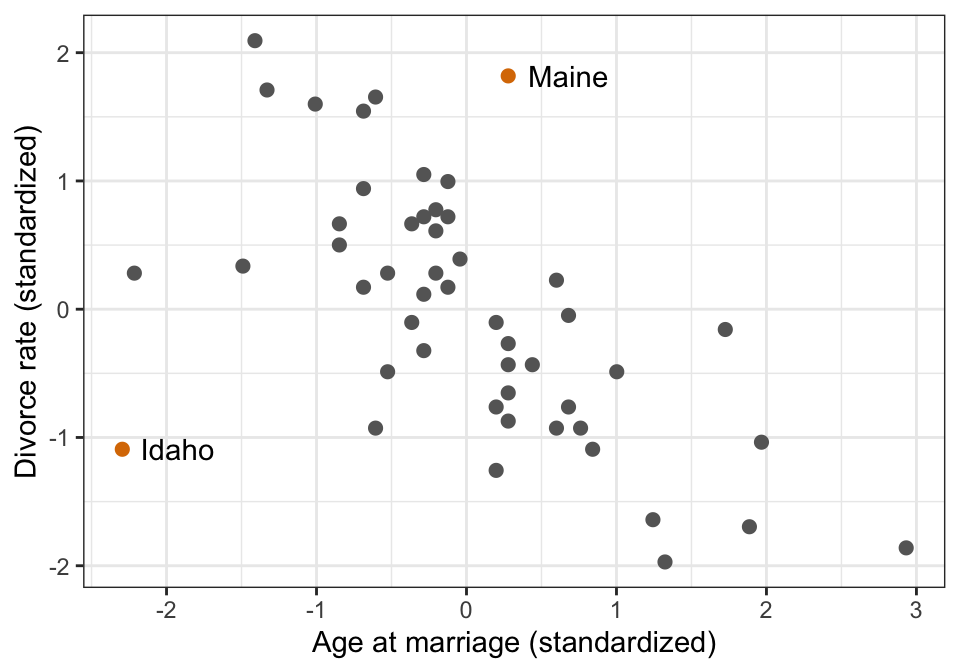
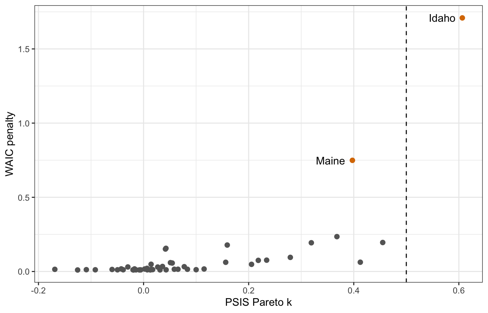
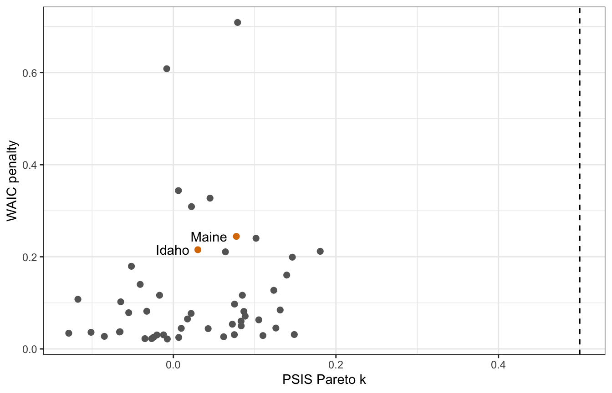
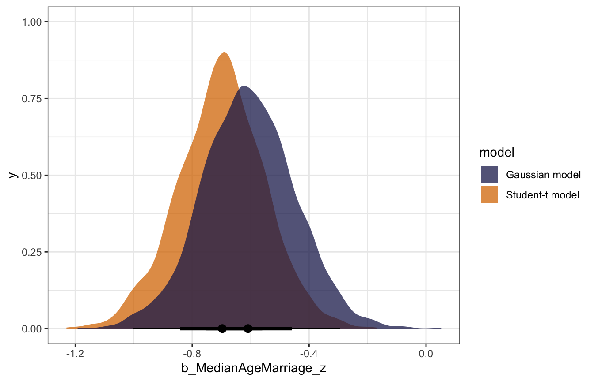

library(tidyverse)
library(brms)
library(loo)
library(tidybayes)
# Plot stuff
clrs <- MetBrewer::met.brewer("Lakota", 6)
theme_set(theme_bw())
# Seed stuff
set.seed(1234)
BAYES_SEED <- 1234
data(WaffleDivorce, package = "rethinking")
WaffleDivorce <- WaffleDivorce %>%
mutate(across(c(Marriage, Divorce, MedianAgeMarriage), ~scale(.), .names = "{col}_scaled")) %>%
mutate(across(c(Marriage, Divorce, MedianAgeMarriage), ~as.numeric(scale(.)), .names = "{col}_z"))Video #7 code
Overfitting
Finding outliers with PSIS and WAIC
ggplot(WaffleDivorce, aes(x = MedianAgeMarriage_z, y = Divorce_z)) +
geom_point(aes(color = Loc %in% c("ME", "ID")), size = 2) +
geom_text(data = filter(WaffleDivorce, Loc %in% c("ME", "ID")),
aes(label = Location), hjust = -0.25) +
scale_color_manual(values = c("grey40", clrs[4]), guide = "none") +
labs(x = "Age at marriage (standardized)", y = "Divorce rate (standardized)")
Run a model:
priors <- c(prior(normal(0, 0.2), class = Intercept),
prior(normal(0, 0.5), class = b, coef = "Marriage_z"),
prior(normal(0, 0.5), class = b, coef = "MedianAgeMarriage_z"),
prior(exponential(1), class = sigma))
marriage_divorce_normal <- brm(
bf(Divorce_z ~ Marriage_z + MedianAgeMarriage_z),
data = WaffleDivorce,
family = gaussian(),
prior = priors,
chains = 4, cores = 4, seed = BAYES_SEED,
backend = "cmdstanr", refresh = 0
)
## Start samplingCheck the LOO stats. One value is fairly influential with k > 0.5, but the others are okay:
loo(marriage_divorce_normal)
##
## Computed from 4000 by 50 log-likelihood matrix
##
## Estimate SE
## elpd_loo -63.8 6.4
## p_loo 4.8 1.9
## looic 127.7 12.8
## ------
## Monte Carlo SE of elpd_loo is 0.1.
##
## Pareto k diagnostic values:
## Count Pct. Min. n_eff
## (-Inf, 0.5] (good) 49 98.0% 688
## (0.5, 0.7] (ok) 1 2.0% 176
## (0.7, 1] (bad) 0 0.0% <NA>
## (1, Inf) (very bad) 0 0.0% <NA>
##
## All Pareto k estimates are ok (k < 0.7).
## See help('pareto-k-diagnostic') for details.Which observation has the high PSIS k value?
loo(marriage_divorce_normal) |>
pareto_k_ids()
## [1] 13Row 13! Which is…
WaffleDivorce |>
slice(13) |>
select(Location)
## Location
## 1 IdahoIdaho.
How big is the actual k value?
loo(marriage_divorce_normal) |>
pareto_k_values() |>
pluck(13)
## [1] 0.6065822We can embed these diagnostics into the brms object with add_criterion():
marriage_divorce_normal <- add_criterion(marriage_divorce_normal, criterion = "loo")
marriage_divorce_normal <- add_criterion(marriage_divorce_normal, criterion = "waic")
## Warning:
## 2 (4.0%) p_waic estimates greater than 0.4. We recommend trying loo instead.And that lets us access things in deeply nested lists, like the 13th Pareto k value:
marriage_divorce_normal$criteria$loo$diagnostics$pareto_k[13]
## [1] 0.6065822Neat. Now we can plot these k values and WAIC values and recreate Figure 7.10 from the book and from 1:03:00 in lecture video 7.
tibble(psis = marriage_divorce_normal$criteria$loo$diagnostics$pareto_k,
p_waic = marriage_divorce_normal$criteria$waic$pointwise[, "p_waic"],
Location = pull(WaffleDivorce, Location),
Loc = pull(WaffleDivorce, Loc)) %>%
ggplot(aes(x = psis, y = p_waic)) +
geom_point(aes(color = Loc %in% c("ME", "ID")), size = 2) +
geom_text(data = . %>% filter(Loc %in% c("ME", "ID")),
aes(label = Location), hjust = 1.25) +
geom_vline(xintercept = 0.5, linetype = 32) +
scale_color_manual(values = c("grey40", clrs[4]), guide = "none") +
labs(x = "PSIS Pareto k", y = "WAIC penalty")
Robust regression
We can do robust regression with family = student(), which has thicker tails and expects larger values out in the tails
priors <- c(prior(normal(0, 0.2), class = Intercept),
prior(normal(0, 0.5), class = b, coef = "Marriage_z"),
prior(normal(0, 0.5), class = b, coef = "MedianAgeMarriage_z"),
prior(exponential(1), class = sigma))
marriage_divorce_student <- brm(
bf(Divorce_z ~ Marriage_z + MedianAgeMarriage_z,
nu = 2), # Tail thickness
data = WaffleDivorce,
family = student(),
prior = priors,
chains = 4, cores = 4, seed = BAYES_SEED,
backend = "cmdstanr", refresh = 0
)
## Start samplingAdd penalty statistics to the model object:
marriage_divorce_student <- add_criterion(marriage_divorce_student, criterion = c("loo", "waic"))
## Warning:
## 2 (4.0%) p_waic estimates greater than 0.4. We recommend trying loo instead.plot_data <- tibble(psis = marriage_divorce_student$criteria$loo$diagnostics$pareto_k,
p_waic = marriage_divorce_student$criteria$waic$pointwise[, "p_waic"],
Location = pull(WaffleDivorce, Location),
Loc = pull(WaffleDivorce, Loc))
plot_data %>%
ggplot(aes(x = psis, y = p_waic)) +
geom_point(aes(color = Loc %in% c("ME", "ID")), size = 2) +
geom_text(data = . %>% filter(Loc %in% c("ME", "ID")),
aes(label = Location), hjust = 1.25) +
geom_vline(xintercept = 0.5, linetype = 32) +
scale_color_manual(values = c("grey40", clrs[4]), guide = "none") +
labs(x = "PSIS Pareto k", y = "WAIC penalty")
Hey hey, Idaho and Maine have much lower PSIS k values now. There are some weird observations with really high WAIC values for some reason:
plot_data |>
arrange(desc(p_waic))
## # A tibble: 50 × 4
## psis p_waic Location Loc
## <dbl> <dbl> <fct> <fct>
## 1 0.0790 0.709 Wyoming WY
## 2 -0.00816 0.608 Utah UT
## 3 0.00618 0.344 Arkansas AR
## 4 0.0451 0.327 North Dakota ND
## 5 0.0223 0.309 Alaska AK
## 6 0.0775 0.244 Maine ME
## 7 0.102 0.240 Rhode Island RI
## 8 0.0301 0.215 Idaho ID
## 9 0.181 0.212 Minnesota MN
## 10 0.0640 0.211 New Jersey NJ
## # … with 40 more rowsWyoming and Utah! Why? I don’t know :(
Compare the models
We can compare the two models’ LOO statistics:
loo_compare(marriage_divorce_normal, marriage_divorce_student, criterion = "loo")
## elpd_diff se_diff
## marriage_divorce_normal 0.0 0.0
## marriage_divorce_student -2.5 3.0
loo_compare(marriage_divorce_normal, marriage_divorce_student, criterion = "waic")
## elpd_diff se_diff
## marriage_divorce_normal 0.0 0.0
## marriage_divorce_student -2.7 2.9The normal model has the higher ELPD score (so it’s better), but the standard error is huge and makes the models indistinguishable (so it’s not necessarily better)
We can also compare the posterior distributions for the effect of age on marriage. The coefficient for age in the Student-t model is more negative and more precise. Idaho was making the normal model too skeptical and too surprised; the Student-t model was less surprised by it.
normal_coefs <- marriage_divorce_normal |>
spread_draws(b_MedianAgeMarriage_z) |>
mutate(model = "Gaussian model")
student_coefs <- marriage_divorce_student |>
spread_draws(b_MedianAgeMarriage_z) |>
mutate(model = "Student-t model")
bind_rows(normal_coefs, student_coefs) |>
ggplot(aes(x = b_MedianAgeMarriage_z, fill = model)) +
stat_halfeye(slab_alpha = 0.75) +
scale_fill_manual(values = c(clrs[6], clrs[4]))